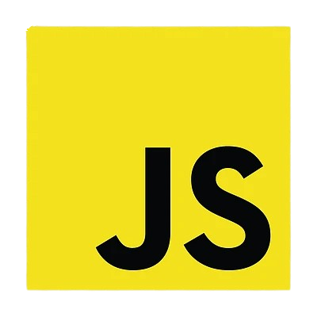
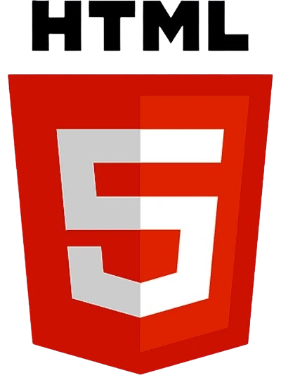

About Me
I’m currently a third-year Computer Science student at Concepcion Holy Cross College Inc., with a strong focus on software development. My academic journey centers around building practical and scalable solutions, and I’ve developed proficiency in programming languages such as Java, PHP, JavaScript, and CSS. I’m passionate about applying my skills to real-world projects and continuously expanding my knowledge in areas like software engineering, data science, and machine learning. I’m actively seeking opportunities to grow in these fields and contribute meaningfully to innovative tech initiatives.
Languages

My favorite languages for systems programming.
Front-End

Technologies for front-end web development and component design.
Tools


My tools for project container and code editing.